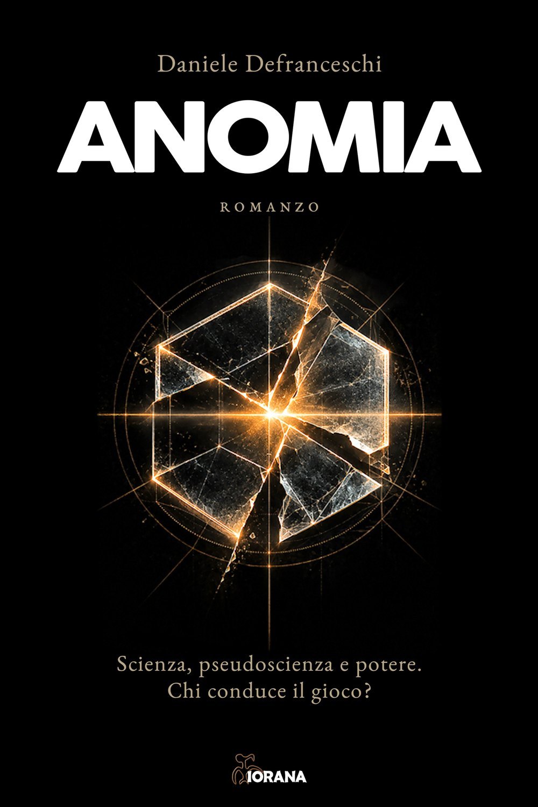

ANOMIA, romanzo di Daniele Defranceschi

Dove cercare le risposte quando la scienza smette di porsi le domande?
Dal 3 dicembre 2026 su Amazon
La storia
Sotto uno strato ghiacciato vecchio di due milioni di anni, il geologo veneziano Remo Fracastoro recupera un oggetto che non dovrebbe esistere. Una forma troppo regolare per essere naturale, troppo antica per essere artificiale. Ma quando si rivolge alla scienza e ai colleghi per una spiegazione, trova solo scetticismo e porte chiuse.
Bussa allora alla porta di chi la verità ufficiale la mette sistematicamente in discussione, Lene Engedal, in arte Capy, youtuber norvegese da milioni di follower, regina dei misteri, dei complotti e delle teorie alternative. L’ultima persona con cui Remo avrebbe mai voluto collaborare.
Mentre una fuga di radiazioni tanto letale quanto inspiegabile raggiunge ogni angolo del globo, i due attraversano oceani e continenti in un viaggio che li porta soprattutto dentro se stessi. Un confronto continuo tra il rigore del metodo e la diffidenza verso ogni certezza imposta, dove dare ragione a qualcuno significa dare torto a qualcun altro, e farsene un nemico.
Perché la verità non è sempre una sola, e a volte siamo noi stessi a non volere le risposte a certe domande.
E quando non resta più nulla a cui affidarsi, quella condizione ha un nome.
Anomia.
L’autore
Daniele Defranceschi (Trieste, 1975) è laureato in DAMS all’Università degli Studi di Udine e si forma come attore e sceneggiatore tra New York, Los Angeles e Madrid, città in cui oggi vive. Firma le storie e le sceneggiature di diversi cortometraggi che interpreta personalmente, tra cui Common Sense (Premio Speciale al 12° Mestre Film Fest) e Anónimos (selezionato ai Goya 2012). Oltre all’Italia, ha vissuto tra Stati Uniti, Caraibi, Canada, Irlanda e Spagna. Le sue esperienze all’estero, assieme alla sua passione per le scienze e per le arti, si riflettono nelle pagine di ANOMIA, il suo primo romanzo.
Il libro
- Editore
- IORANA Edizioni
- Uscita
- 3 dicembre 2026
- Formato
- brossura, 15,24 × 22,86 cm
- Pagine
- 491
- Lingua
- italiano
- ISBN
- 9791224352747
- Prezzo
- 16,90 €